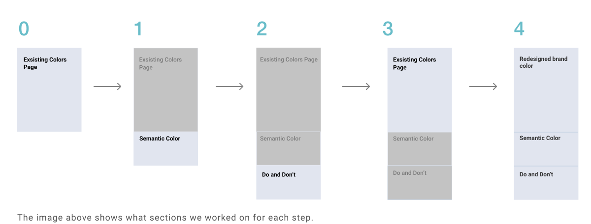
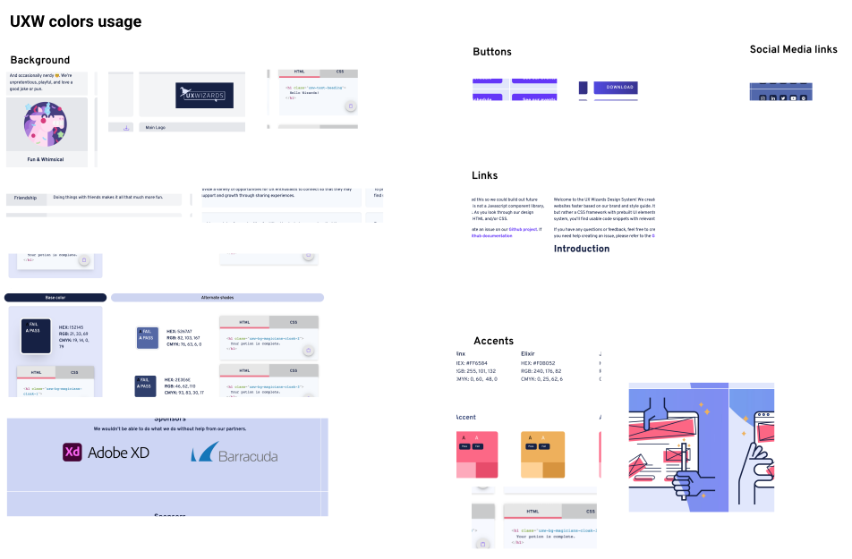
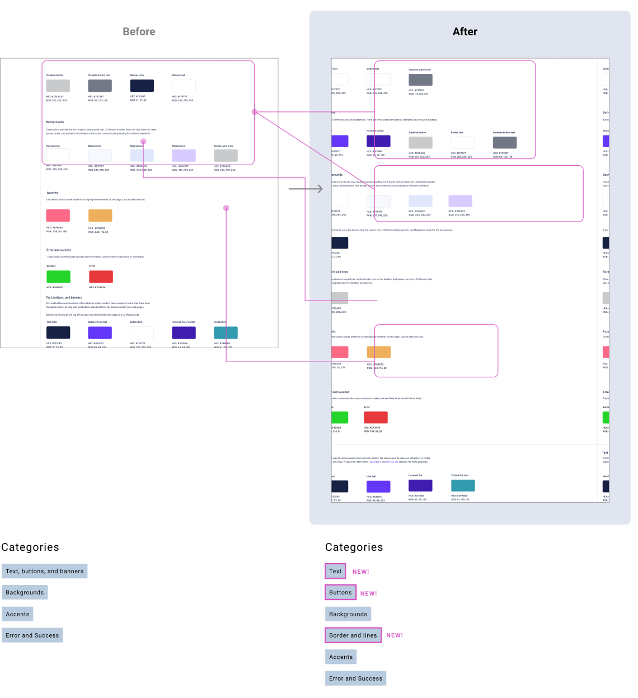
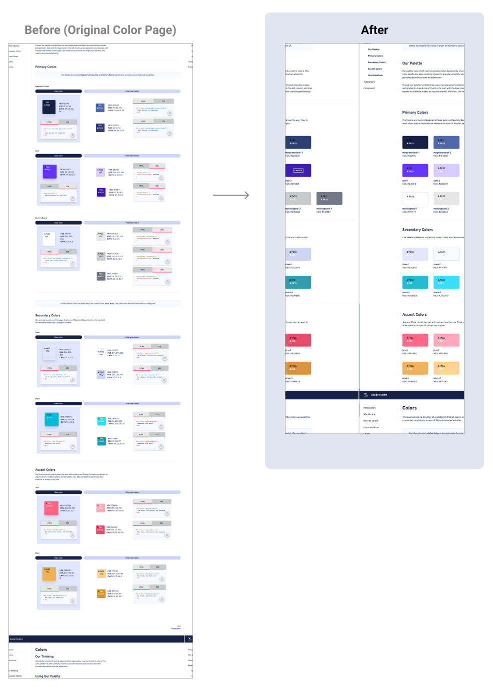
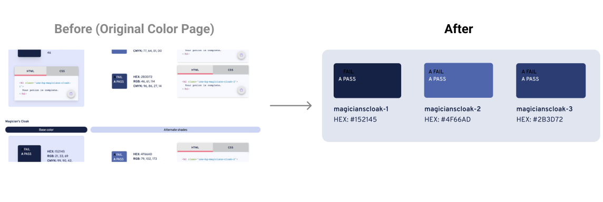

Design System Colors Page
A project to update a design system’s color page.
Including creating semantic colors, Dos and Don’ts, and redesigning the existing Colors page.

A project to update a design system’s color page.
Including creating semantic colors, Dos and Don’ts, and redesigning the existing Colors page.
UX Wizards is a design community for enthusiasts of all levels to share knowledge and grow together. UX Wizards launched the first Design system on April 14, 2021 (I joined this project and worked on Logos and Icons page).For the next project, the Design team decided to create the Semantic Colors and Dos and Don’ts sections for the Color page to use colors more intentionally.
YEAR
2021, 6 month
ROLE
Project lead, Design, and Development
TEAM
Seiko (self), Max (Designer), Chaela (Designer), Kaisen (Developer)
TOOLS
Figma, Material UI, Github
UX Wizard has over 10 designers who are working on websites and products. They use brand colors but the usage is not consistent. e.g. One site uses a purple color for the link and the other site uses the same purple for the header text. Users need to remember color usage for each product.
Create a color guideline to use color intentionally in order to Increase brand cohesion and better user ability across digital products. In addition, reduce color decision fatigue for designers and developers.
Our plan was to complete the project in 4 steps:
This way we didn’t feel overwhelmed and were able to focus on one section of the design at a time. In the final stage, we reviewed the overall page design and content consistency.
We started with research to determine how established design systems display semantic colors on their website.

We took screenshots and categorized them by similar style

Our favorite user interface was E-trade
What we liked about it

Other findings
After the exploratory research, we discussed the design layout and the semantic categories we’d like to include. I quickly sketched some ideas see below to make sure we are all on the same page.

I audited UX Wizard’s digital products (Website and Design system) and took screenshots of key components. Then I categorized them into Background, Buttons, Links, and Accent Colors to see which colors are used. These screenshots are shown below.
After the audit, we selected colors that can be the standard for each category like text, button, and background colors. We hadn’t had error and success colors, but we decided to add them to the page for future production.
For our first version, we made a color guideline with each category having an applicable color swatch and usage shown below.

We conducted a feedback session with our stakeholders using the V1 Design to ensure our design was heading in the right direction.
The feedback we received was:
Given this feedback we did 3 iteration to address the issues brought up in the freedback session.
Iteration 1: Breakdown sections
We made this change to find an item quickly. Before Text, buttons and banners were in one section, now we created a separate section for text and buttons. The banner color was moved to under the background. In addition, we created Borders and lines in their own section.
Below is before and after changes in detail.
Iteration 2: Breakdown sections
To showcase the color guide in real practice, Max made this sample design.

Iteration 3: Error and success colors
We received feedback that the error and success color looks too saturated, but how can we judge which color is the best? Just looking at the color is hard to tell whether this color works or not. To overcome this, we created a sample UI. Then we picked 3 potential color pairs and applied them to the UI to compare colors.

The Dos and Don’ts section is to ground the color guideline to showcase how to use colors effectively and avoid mistakes that we found in the past. Chaela made this Dos and Don’ts content and Max and I stylized it to fit the rest of the content.

Semantic color and the Dos and Don’ts sections were done. We moved to review the other sections in the existing colors page. We had been using the other existing page for over 6 months and it was a good opportunity to come back and iterate the design.
The diagram below shows the overview of all of the changes we did.
We started the discussion about what changes to make with “Should we keep the code snippets or remove them?”
I wanted to simplify the existing design to be more scannable. I brought this up at the team meeting and we had a big discussion. Designers had different opinions. Some agree, and others thought it better to keep the code snippets. We couldn’t come to a conclusion at the meeting, so how should we decide? We decided to ask users. How users have been using it? Is it a useful feature or not so much? Instead of assuming and designing, we conducted a user interview.
We asked 5 designers and developers who used the existing website for 6 months to get feedback.
Feedback we received
With the other general feedback we got, we had trouble deciding if we should keep RGB and CMYK values on the page, as this would depend on who our user was. So who is the user and what is the goal of the design system?
The discussions on the feedback let to the conclusion that we want to make the design simple and make the brand colors the center of the design.
After the user interview and discussion, the team decided what we are going to change.
Iterations 1 & 2: Brand color swatch
Removed Code snippets, RGB, and CMYK colors. Added each brand color’s tokens.
To remove the RGB and CMYK, we’d like to keep those values in one place. If we decided to bring back the values, we can grab the values from this spreadsheet.
Iteration 3: Copy function
I did a few iterations on the copy feature. The below image was a major change. The original version of the copy icon is small. To copy the code, users need to press the small icon area. In the final design, I made each color swatch to be a button. When hovering a color, it will enlarge and show the Copy HEX text on color. When clicking the button, it gives HEX Copied feedback.

Here is copy function demo
Iteration 4: Move Copy Snippets to Components Page
This was out of the scope of the project, however, I created Component pages to store reusable HTML/CSS code as a side project.
Finally, we have finished 1. Semantic colors page, 2. Dos and Don’ts, and 3. the redesigned brand color section into one page. Now we review the information and design, to make it flow, reduce redundancy and check for consistency.
This video shows Final Colors page